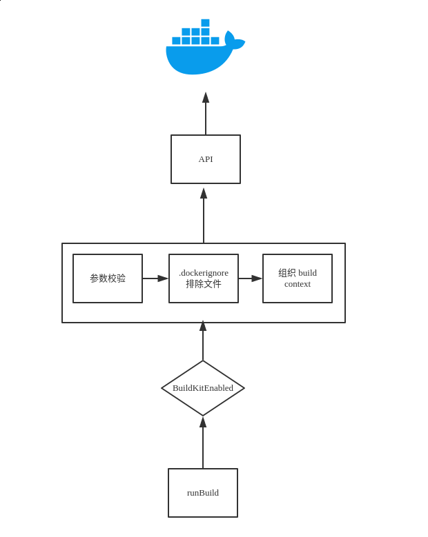

- AQS 万字图文全面解析.md.html
- Docker 镜像构建原理及源码分析.md.html
- ElasticSearch 小白从入门到精通.md.html
- JVM CPU Profiler技术原理及源码深度解析.md.html
- JVM 垃圾收集器.md.html
- JVM 面试的 30 个知识点.md.html
- Java IO 体系、线程模型大总结.md.html
- Java NIO浅析.md.html
- Java 面试题集锦（网络篇）.md.html
- Java-直接内存 DirectMemory 详解.md.html
- Java中9种常见的CMS GC问题分析与解决（上）.md.html
- Java中9种常见的CMS GC问题分析与解决（下）.md.html
- Java中的SPI.md.html
- Java中的ThreadLocal.md.html
- Java线程池实现原理及其在美团业务中的实践.md.html
- Java魔法类：Unsafe应用解析.md.html
- Kafka 源码阅读笔记.md.html
- Kafka、ActiveMQ、RabbitMQ、RocketMQ 区别以及高可用原理.md.html
- MySQL · 引擎特性 · InnoDB Buffer Pool.md.html
- MySQL · 引擎特性 · InnoDB IO子系统.md.html
- MySQL · 引擎特性 · InnoDB 事务系统.md.html
- MySQL · 引擎特性 · InnoDB 同步机制.md.html
- MySQL · 引擎特性 · InnoDB 数据页解析.md.html
- MySQL · 引擎特性 · InnoDB崩溃恢复.md.html
- MySQL · 引擎特性 · 临时表那些事儿.md.html
- MySQL 主从复制 半同步复制.md.html
- MySQL 主从复制 基于GTID复制.md.html
- MySQL 主从复制.md.html
- MySQL 事务日志(redo log和undo log).md.html
- MySQL 亿级别数据迁移实战代码分享.md.html
- MySQL 从一条数据说起-InnoDB行存储数据结构.md.html
- MySQL 地基基础：事务和锁的面纱.md.html
- MySQL 地基基础：数据字典.md.html
- MySQL 地基基础：数据库字符集.md.html
- MySQL 性能优化：碎片整理.md.html
- MySQL 故障诊断：一个 ALTER TALBE 执行了很久，你慌不慌？.md.html
- MySQL 故障诊断：如何在日志中轻松定位大事务.md.html
- MySQL 故障诊断：教你快速定位加锁的 SQL.md.html
- MySQL 日志详解.md.html
- MySQL 的半同步是什么？.md.html
- MySQL中的事务和MVCC.md.html
- MySQL事务_事务隔离级别详解.md.html
- MySQL优化：优化 select count().md.html
- MySQL共享锁、排他锁、悲观锁、乐观锁.md.html
- MySQL的MVCC（多版本并发控制）.md.html
- QingStor 对象存储架构设计及最佳实践.md.html
- RocketMQ 面试题集锦.md.html
- SnowFlake 雪花算法生成分布式 ID.md.html
- Spring Boot 2.x 结合 k8s 实现分布式微服务架构.md.html
- Spring Boot 教程：如何开发一个 starter.md.html
- Spring MVC 原理.md.html
- Spring MyBatis和Spring整合的奥秘.md.html
- Spring 帮助你更好的理解Spring循环依赖.md.html
- Spring 循环依赖及解决方式.md.html
- Spring中眼花缭乱的BeanDefinition.md.html
- Vert.x 基础入门.md.html
- eBay 的 Elasticsearch 性能调优实践.md.html
- 不可不说的Java“锁”事.md.html
- 互联网并发限流实战.md.html
- 从ReentrantLock的实现看AQS的原理及应用.md.html
- 从SpringCloud开始，聊微服务架构.md.html
- 全面了解 JDK 线程池实现原理.md.html
- 分布式一致性理论与算法.md.html
- 分布式一致性算法 Raft.md.html
- 分布式唯一 ID 解析.md.html
- 分布式链路追踪：集群管理设计.md.html
- 动态代理种类及原理，你知道多少？.md.html
- 响应式架构与 RxJava 在有赞零售的实践.md.html
- 大数据算法——布隆过滤器.md.html
- 如何优雅地记录操作日志？.md.html
- 如何设计一个亿级消息量的 IM 系统.md.html
- 异步网络模型.md.html
- 当我们在讨论CQRS时，我们在讨论些神马？.md.html
- 彻底理解 MySQL 的索引机制.md.html
- 最全的 116 道 Redis 面试题解答.md.html
- 有赞权限系统(SAM).md.html
- 有赞零售中台建设方法的探索与实践.md.html
- 服务注册与发现原理剖析（Eureka、Zookeeper、Nacos）.md.html
- 深入浅出Cache.md.html
- 深入理解 MySQL 底层实现.md.html
- 漫画讲解 git rebase VS git merge.md.html
- 生成浏览器唯一稳定 ID 的探索.md.html
- 缓存 如何保证缓存与数据库的双写一致性？.md.html
- 网易严选怎么做全链路监控的？.md.html
- 美团万亿级 KV 存储架构与实践.md.html
- 美团点评Kubernetes集群管理实践.md.html
- 美团百亿规模API网关服务Shepherd的设计与实现.md.html
- 解读《阿里巴巴 Java 开发手册》背后的思考.md.html
- 认识 MySQL 和 Redis 的数据一致性问题.md.html
- 进阶：Dockerfile 高阶使用指南及镜像优化.md.html
- 铁总在用的高性能分布式缓存计算框架 Geode.md.html
- 阿里云PolarDB及其共享存储PolarFS技术实现分析（上）.md.html
- 阿里云PolarDB及其共享存储PolarFS技术实现分析（下）.md.html
- 面试最常被问的 Java 后端题.md.html
- 领域驱动设计在互联网业务开发中的实践.md.html
- 领域驱动设计的菱形对称架构.md.html
- 高效构建 Docker 镜像的最佳实践.md.html
- 捐赠
Docker 镜像构建原理及源码分析
Docker 架构
这里我们先从宏观上对 Docker 有个大概的认识，就像我[之前]提到的它整体上是个 C/S 架构；我们平时使用的 docker 命令就是它的 CLI 客户端，而它的服务端是 dockerd 在 Linux 系统中，通常我们是使用 systemd 进行管理，所以我们可以使用 systemctl start docker 来启动服务。（但是请注意，dockerd 是否能运行与 systemd 并无任何关系，你可以像平时执行一个普通的二进制程序一样，直接通过 dockerd 来启动服务，注意需要 root 权限）
实际上也就是

(图片来源：docker overview)
docker CLI 与 dockerd 的交互是通过 rest API 来完成的，当我们执行 docker version 的时候过滤 API 可以看到如下输出：
# docker version |grep API
API version: 1.40
API version: 1.40 (minimum version 1.12)
上面一行是 docker CLI 的 API 版本，下面则代表了 dockerd 的 API 版本，它的后面还有个括号，是因为 Docker 具备了很良好的兼容性，这里表示它最小可兼容的 API 版本是 1.12 。
对于我们进行 C/S 架构的项目开发而言，一般都是 API 先行, 所以我们先来看下 API 的部分。
当然，本次 Chat 的主体是构建系统相关的，所以我们就直接来看构建相关的 API 即可。
接下来会说 CLI，代码以 v19.03.0-rc2-4-ga63faebc 为准。
最后说服务端 Dockerd 。
API
Docker 官方在每个版本正式发布之后，都会将 API 文档发布出来，在线地址是 https://docs.docker.com/engine/api/v1.39/#operation/ImageBuild 但由于现在 19.03 还未发布，所以 1.40 版本的 API 文档也尚未正式发布。
1.39 和 1.40 中，关于镜像构建部分的 API 其实没太大变化，所以直接参考 1.39 版本的 API 文档看也可以。或者我们也可以自行构建 API 文档。
首先 clone Docker 的源代码仓库, 进入项目仓库内执行 make swagger-docs 即可在启动一个容器同时将端口暴露至本地的 9000 端口， 你可以直接通过 http://127.0.0.1:9000 访问本地的 API 文档。
(MoeLove) ➜ git clone https://github.com/docker/engine.git docker
(MoeLove) ➜ cd docker
(MoeLove) ➜ docker git:(master) git checkout -b v19.03.0-rc2 v19.03.0-rc2
(MoeLove) ➜ docker git:(v19.03.0-rc2) make swagger-docs
API docs preview will be running at http://localhost:9000
打开 http://127.0.0.1:9000/#operation/ImageBuild 这个地址就可以看到 1.40 版本的构建镜像所需的 API 了。我们对此 API 进行下分析。
请求地址和方法
接口地址是 /v1.40/build 方法是 POST
我们可以使用一个较新版本的 curl 工具来验证下此接口（需要使用 --unix-socket 连接 Docker 监听的 UNIX Domain Socket ）
/var/run/docker.sock 这是默认情况下 dockerd 所监听的地址，当然你也可以给 dockerd 传递 --host 参数用于监听 HTTP 端口或者其他路径的 unix socket .
/ # curl -X POST --unix-socket /var/run/docker.sock localhost/v1.40/build
{"message":"Cannot locate specified Dockerfile: Dockerfile"}
从上面的输出我们可以看到，我们确实访问到了该接口，同时该接口的响应是提示需要 Dockerfile .
请求体
A tar archive compressed with one of the following algorithms: identity (no compression), gzip, bzip2, xz. string
请求体是一个 tar 归档文件，可选择无压缩、gzip、bzip2、xz 压缩等形式。关于这几种压缩格式就不再展开介绍了，但值得注意的是 如果使用了压缩，则传输体积会变小，即网络消耗会相应减少。但压缩/解压缩需要耗费 CPU 等计算资源 这在我们对大规模镜像构建做优化时是个值得权衡的点。
请求头
因为要发送的是个 tar 归档文件，Content-type 默认是 application/x-tar 。
另一个会发送的头是 X-Registry-Config，这是一个由 Base64 编码后的 Docker Registry 的配置信息，内容与 $HOME/.docker/config.json 中的 auths 内的信息一致。
这些配置信息，在你执行 docker login 后会自动写入到 $HOME/.docker/config.json 文件内的。这些信息被传输到 dockerd 在构建过程中作为拉取镜像的认证信息使用。
请求参数
最后就是请求参数了，参数有很多，通过 docker build --help 基本都可以看到对应含义的，这里不再一一展开了，后面会有一些关键参数的介绍。
小结
上面我们介绍了 Docker 构建镜像相关的 API，我们可以通过在线地址 https://docs.docker.com/engine/api/v1.39/#operation/ImageBuild 访问旧版本的 API，待新版本发布后，就可以访问新版本 API 文档了。或者通过源码仓库，自己来构建一个本地的 API 文档服务，使用浏览器进行访问。
通过 API 我们也知道了该接口所需的请求体是一个 tar 归档文件（可选择压缩算法进行压缩），同时它的请求头中会携带用户在镜像仓库中的认证信息。
这提醒我们， 如果在使用远程 Dockerd 构建时，请注意安全，尽量使用 tls 进行加密，以免数据泄漏。
CLI
API 已经介绍完了，我们来看下 docker CLI，在我们前两次的 Chat中，我们聊过现在 Docker 中有两个构建系统，一个是 v1 版本的 builder 另一个是 v2 版本的即 buildkit 我们来分别深入源码来看看在构建镜像时，他们各自的行为吧。
准备代码
CLI 的代码仓库在 https://github.com/docker/cli 本次 Chat 的代码以 v19.03.0-rc2-4-ga63faebc 为准。
通过以下步骤使用此版本的代码：
(MoeLove) ➜ git clone https://github.com/docker/cli.git
(MoeLove) ➜ cd cli
(MoeLove) ➜ cli git:(master) git checkout -b v19.03 v19.03.0-rc2-4-ga63faebc
逐步分解
docker 是我们所使用的客户端工具，用于与 dockerd 进行交互。关于构建相关的部分， 我们所熟知的便是 docker build 或者是 docker image build，在 19.03 中新增的是 docker builder build ，但其实他们都是同一个只是做了个 alias 罢了：
// cmd/docker/docker.go#L231
if v, ok := aliasMap["builder"]; ok {
aliases = append(aliases,
[2][]string{{"build"}, {v, "build"}},
[2][]string{{"image", "build"}, {v, "build"}},
)
}
真正的入口函数其实在 cli/command/image/build.go ；区分如何调用的逻辑如下：
func runBuild(dockerCli command.Cli, options buildOptions) error {
buildkitEnabled, err := command.BuildKitEnabled(dockerCli.ServerInfo())
if err != nil {
return err
}
if buildkitEnabled {
return runBuildBuildKit(dockerCli, options)
}
// 省略掉了对于 builder 的实际逻辑
}
这里就是判断下是否支持 buildkit
// cli/command/cli.go#L151
func BuildKitEnabled(si ServerInfo) (bool, error) {
buildkitEnabled := si.BuildkitVersion == types.BuilderBuildKit
if buildkitEnv := os.Getenv("DOCKER_BUILDKIT"); buildkitEnv != "" {
var err error
buildkitEnabled, err = strconv.ParseBool(buildkitEnv)
if err != nil {
return false, errors.Wrap(err, "DOCKER_BUILDKIT environment variable expects boolean value")
}
}
return buildkitEnabled, nil
}
当然，从这里可以得到两个信息：
- 通过
dockerd的配置可开启buildkit。在/etc/docker/daemon.json中添加如下内容，并重启dockerd即可：
{
"features": {
"buildkit": true
}
}
- 在
dockerCLI 上也可开启buildkit的支持，并且 CLI 的配置可覆盖服务端配置:
通过 export DOCKER_BUILDKIT=1 即可开启 buildkit 的支持，设置为 0 则关闭（0/false/f/F 之类的也都是相同的结果）
从上面的介绍也看到了，对于原本默认的 builder 而言， 入口逻辑在 runBuild 中， 而对于使用 buildkit 的则是 runBuildBuildKit 接下来，我们对两者进行逐步分解。
builder v1
在 runBuild 函数中，大致经历了以下阶段：
参数处理
最开始的部分是一些对参数的处理和校验。
- stream 和 compress 不可同时使用。
因为如果我们指定了 compress 的话，则 CLI 会使用 gzip 将构建上下文进行压缩，这样也就没法很好的通过 stream 的模式来处理构建的上下文了。
当然你也可能会想，从技术上来讲，压缩和流式没有什么必然的冲突，是可实现的。事实的确如此，如果从技术的角度上来讲两者并非完全不能一起存在，无非就是增加解压缩的动作。但是当开启 stream 模式，对每个文件都进行压缩和解压的操作那将会是很大的资源浪费，同时也增加了其复杂度，所以在 CLI 中便直接进行了限制，不允许同时使用 compress 和 stream
- 不可同时使用 stdin 读取 Dockerfile 和 build context。
在进行构建时，如果我们将 Dockerfile 的名字传递为 - 时，表示从 stdin 读取其内容。
例如，某个目录下有三个文件 foo bar 和 Dockerfile，通过管道将 Dockerfile 的内容通过 stdin 传递给 docker build
(MoeLove) ➜ x ls
bar Dockerfile foo
(MoeLove) ➜ x cat Dockerfile | DOCKER_BUILDKIT=0 docker build -f - .
Sending build context to Docker daemon 15.41kB
Step 1/3 : FROM scratch
--->
Step 2/3 : COPY foo foo
---> a2af45d66bb5
Step 3/3 : COPY bar bar
---> cc803c675dd2
Successfully built cc803c675dd2
可以看到通过 stdin 传递 Dockerfile 的方式能成功的构建镜像。接下来我们尝试通过 stdin 将 build context 传递进去。
(MoeLove) ➜ x tar -cvf x.tar foo bar Dockerfile
foo
bar
Dockerfile
(MoeLove) ➜ x cat x.tar| DOCKER_BUILDKIT=0 docker build -f Dockerfile -
Sending build context to Docker daemon 10.24kB
Step 1/3 : FROM scratch
--->
Step 2/3 : COPY foo foo
---> 09319712e220
Step 3/3 : COPY bar bar
---> ce88644a7395
Successfully built ce88644a7395
可以看到通过 stdin 传递 build context 的方式也可以成功构建镜像。
但如果 Dockerfile 的名称与构建的上下文都指定为 - 即 docker build -f - - 时，会发生什么呢？
(MoeLove) ➜ x DOCKER_BUILDKIT=0 docker build -f - -
invalid argument: can't use stdin for both build context and dockerfile
就会报错了。所以， 不能同时使用 stdin 读取 Dockerfile 和 build context 。
- build context 支持四种行为。
switch {
case options.contextFromStdin():
// 省略
case isLocalDir(specifiedContext):
// 省略
case urlutil.IsGitURL(specifiedContext):
// 省略
case urlutil.IsURL(specifiedContext):
// 省略
default:
return errors.Errorf("unable to prepare context: path %q not found", specifiedContext)
}
从 stdin 传入，上文已经演示过了，传递给 stdin 的是 tar 归档文件；
当然也可以是指定一个具体的 PATH，我们通常使用的 docker build . 便是这种用法；
或者可以指定一个 git 仓库的地址，CLI 会调用 git 命令将仓库 clone 至一个临时目录，进行使用；
最后一种是，给定一个 URL 地址，该地址可以是 一个具体的 Dockerfile 文件地址 或者是 一个 tar 归档文件的下载地址 。
这几种基本就是字面上的区别，至于 CLI 的行为差异，主要是最后一种，当 URL 地址是一个具体的 Dockerfile 文件地址，在这种情况下 build context 相当于只有 Dockerfile 自身，所以并不能使用 COPY 之类的指定，至于 ADD 也只能使用可访问的外部地址。
- 可使用 .dockerignore 忽略不需要的文件
我在之前的 Chat [高效构建 Docker 镜像的最佳实践] 中有分享过相关的内容。这里我们看看它的实现逻辑。
// cli/command/image/build/dockerignore.go#L13
func ReadDockerignore(contextDir string) ([]string, error) {
var excludes []string
f, err := os.Open(filepath.Join(contextDir, ".dockerignore"))
switch {
case os.IsNotExist(err):
return excludes, nil
case err != nil:
return nil, err
}
defer f.Close()
return dockerignore.ReadAll(f)
}
.dockerignore是一个固定的文件名，并且需要放在build context的根目录下。类似前面提到的，使用一个Dockerfile文件的 URL 地址作为build context传入的方式，便无法使用.dockerignore。.dockerignore文件可以不存在，但在读取的时候如果遇到错误，便会抛出错误。- 通过
.dockerignore将会过滤掉不希望加入到镜像内，或者过滤掉与镜像无关的内容。
最后 CLI 会将 build context 中的内容经过 .dockerignore 过滤后，打包成为真正的 build context 即真正的构建上下文。这也是为什么有时候你发现自己明明在 Dockerfile 里面写了 COPY xx xx 但是最后没有发现该文件的情况。 很可能就是被 .dockerignore 给忽略掉了。
这样有利于优化 CLI 与 dockerd 之间的传输压力之类的。
dockerCLI 还会去读取~/.docker/config.json中的内容。
这与前面 API 部分所描述的内容基本是一致的。将认证信息通过 X-Registry-Config 头传递给 dockerd 用于在需要拉取镜像时进行身份校验。
- 调用 API 进行实际构建任务
当一切所需的校验和信息都准备就绪之后，则开始调用 dockerCli.Client 封装的 API 接口，将请求发送至 dockerd，进行实际的构建任务。
response, err := dockerCli.Client().ImageBuild(ctx, body, buildOptions)
if err != nil {
if options.quiet {
fmt.Fprintf(dockerCli.Err(), "%s", progBuff)
}
cancel()
return err
}
defer response.Body.Close()
到这里其实一次构建的过程中 CLI 所处理的流程就基本结束了，之后便是按照传递的参数进行进度的输出或是将镜像 ID 写入到文件之类的。 这部分就不进行展开了。
小结
整个过程大致如下图：

从入口函数 runBuild 开始，经过判断是否支持 buildkit ，如果不支持 buildkit 则继续使用 v1 的 builder。接下来读取各类参数，按照不同的参数执行各类不同的处理逻辑。这里需要注意的就是 Dockerfile 及 build context 都可支持从文件或者 stdin 等读入，具体使用时，需要注意。
另外 .dockerignore 文件可过滤掉 build context 中的一些文件，在使用时，可通过此方法进行构建效率的优化，当然也需要注意，在通过 URL 获取 Dockerfile 的时候，是不存在 build context 的，所以类似 COPY 这样的命令也就无法使用了。
当所有的 build context 和参数都准备就绪后，接下来调用封装好的客户端，将这些请求按照本文开始之初介绍的 API 发送给 dockerd ，由其进行真正的构建逻辑。
最后当构建结束后，CLI 根据参数决定是否要显示构建进度或者结果。
buildkit
接下来我们来看看 buildkit 如何来执行构建，方法入口与 builder 一致，但是在 buildkitEnabled 处，由于开启了 buildkit 支持，所以跳转到了 runBuildBuildKit。
func runBuild(dockerCli command.Cli, options buildOptions) error {
buildkitEnabled, err := command.BuildKitEnabled(dockerCli.ServerInfo())
if err != nil {
return err
}
if buildkitEnabled {
return runBuildBuildKit(dockerCli, options)
}
// 省略掉了对于 builder 的实际逻辑
}
创建会话
但是与 builder 不同的是，这里先执行了一次 trySession 函数。
// cli/command/image/build_buildkit.go#L48
s, err := trySession(dockerCli, options.context, false)
if err != nil {
return err
}
if s == nil {
return errors.Errorf("buildkit not supported by daemon")
}
这个函数是用来做什么的呢？我们来找到该函数所在的文件 cli/command/image/build_session.go
// cli/command/image/build_session.go#L37
func trySession(dockerCli command.Cli, contextDir string, forStream bool) (*session.Session, error) {
var s *session.Session
if isSessionSupported(dockerCli, forStream) {
sharedKey, err := getBuildSharedKey(contextDir)
if err != nil {
return nil, errors.Wrap(err, "failed to get build shared key")
}
s, err = session.NewSession(context.Background(), filepath.Base(contextDir), sharedKey)
if err != nil {
return nil, errors.Wrap(err, "failed to create session")
}
}
return s, nil
}
当然还包括它其中最主要的 isSessionSupported 函数：
// cli/command/image/build_session.go#L30
func isSessionSupported(dockerCli command.Cli, forStream bool) bool {
if !forStream && versions.GreaterThanOrEqualTo(dockerCli.Client().ClientVersion(), "1.39") {
return true
}
return dockerCli.ServerInfo().HasExperimental && versions.GreaterThanOrEqualTo(dockerCli.Client().ClientVersion(), "1.31")
}
isSessionSupported 很明显是用于判断是否支持 Session，这里由于我们会传入 forStream 为 false ，而且当前的 API 版本是 1.40 比 1.39 大，所以此函数会返回 true 。其实在 builder 中也执行过相同的逻辑，只不过是在传递了 --stream 参数后，使用 Session 获取一个长连接以达到 stream 的处理能力。
这也就是为什么会有下面 dockerCli.ServerInfo().HasExperimental && versions.GreaterThanOrEqualTo(dockerCli.Client().ClientVersion(), "1.31") 这个判断存在的原因了。
当确认支持 Session 时，则会调用 session.NewSession 创建一个新的会话。
// github.com/moby/buildkit/session/session.go#L45
func NewSession(ctx context.Context, name, sharedKey string) (*Session, error) {
id := identity.NewID()
serverOpts := []grpc.ServerOption{}
if span := opentracing.SpanFromContext(ctx); span != nil {
tracer := span.Tracer()
serverOpts = []grpc.ServerOption{
grpc.StreamInterceptor(otgrpc.OpenTracingStreamServerInterceptor(span.Tracer(), traceFilter())),
grpc.UnaryInterceptor(otgrpc.OpenTracingServerInterceptor(tracer, traceFilter())),
}
}
s := &Session{
id: id,
name: name,
sharedKey: sharedKey,
grpcServer: grpc.NewServer(serverOpts...),
}
grpc_health_v1.RegisterHealthServer(s.grpcServer, health.NewServer())
return s, nil
}
它创建了一个长连接会话，接下来的操作也都会基于这个会话来做。
接下来的操作与 builder 大体一致，先判断 context 是以哪种形式提供的；当然它也与 builder 一样，是不允许同时从 stdin 获取 Dockerfile 和 build context 。
switch {
case options.contextFromStdin():
// 省略处理逻辑
case isLocalDir(options.context):
// 省略处理逻辑
case urlutil.IsGitURL(options.context):
// 省略处理逻辑
case urlutil.IsURL(options.context):
// 省略处理逻辑
default:
return errors.Errorf("unable to prepare context: path %q not found", options.context)
}
这里的处理逻辑与 v1 builder 保持一致的原因，主要在于用户体验上，当前的 CLI 的功能已经基本稳定，用户也已经习惯，所以即使是增加了 buildkit 也并没有对主体的操作逻辑造成多大改变。
选择输出模式
buildkit 支持了三种不同的输出模式 local tar 和正常模式（即存储在 dockerd 中）， 格式为 -o type=local,dest=path 如果需要将构建的镜像进行分发，或是需要进行镜像内文件浏览的话，使用这个方式也是很方便的。
outputs, err := parseOutputs(options.outputs)
if err != nil {
return errors.Wrapf(err, "failed to parse outputs")
}
for _, out := range outputs {
switch out.Type {
case "local":
// 省略
case "tar":
// 省略
}
}
其实它支持的模式还有第 4 种， 名为 cacheonly 但它并不会像前面提到的三种模式一样，有个很直观的输出，而且用的人可能会很少，所以就没有单独写了。
读取认证信息
s.Allow(authprovider.NewDockerAuthProvider(os.Stderr))
这里的行为与上面提到的 builder 的行为基本一致，这里主要有两个需要注意的点：
- Allow() 函数
func (s *Session) Allow(a Attachable) {
a.Register(s.grpcServer)
}
这个 Allow 函数就是允许通过上面提到的 grpc 会话访问给定的服务。
authprovider
authprovider 是 buildkit 提供的一组抽象接口集合，通过它们可以访问到机器上的配置文件，进而拿到认证信息，行为与 builder 基本一致。
高阶特性：secrets 和 ssh
在前一篇 Chat 进阶：Dockerfile 高阶使用指南及镜像优化 我已经讲过这两种高阶特性的使用了，本篇中就不再多使用进行过多说明了，只来大体看下该部分的原理和逻辑。
secretsprovider 和 sshprovider 都是 buildkit 在提供的，利用这两种特性可以在 Docker 镜像进行构建时更加安全，且更加灵活。
func parseSecretSpecs(sl []string) (session.Attachable, error) {
fs := make([]secretsprovider.FileSource, 0, len(sl))
for _, v := range sl {
s, err := parseSecret(v)
if err != nil {
return nil, err
}
fs = append(fs, *s)
}
store, err := secretsprovider.NewFileStore(fs)
if err != nil {
return nil, err
}
return secretsprovider.NewSecretProvider(store), nil
}
关于 secrets 方面，最终的 parseSecret 会完成格式相关的校验之类的；
func parseSSHSpecs(sl []string) (session.Attachable, error) {
configs := make([]sshprovider.AgentConfig, 0, len(sl))
for _, v := range sl {
c, err := parseSSH(v)
if err != nil {
return nil, err
}
configs = append(configs, *c)
}
return sshprovider.NewSSHAgentProvider(configs)
}
而关于 ssh 方面，则与上方的 secrets 基本一致，通过 sshprovider 允许进行 ssh 转发之类的，这里不再深入展开了。
调用 API 发送构建请求
这里主要有两种情况。
- 当
build context是从stdin读，并且是一个tar文件时
buildID := stringid.GenerateRandomID()
if body != nil {
eg.Go(func() error {
buildOptions := types.ImageBuildOptions{
Version: types.BuilderBuildKit,
BuildID: uploadRequestRemote + ":" + buildID,
}
response, err := dockerCli.Client().ImageBuild(context.Background(), body, buildOptions)
if err != nil {
return err
}
defer response.Body.Close()
return nil
})
}
它会执行这部分逻辑，但同时也要注意，这是使用的是 Golang 的 goroutine，到这里也并不是结束，这部分代码之后的代码也同样会被执行。这就说到了另一种情况了(通常情况)。
- 使用
doBuild完成逻辑
eg.Go(func() error {
defer func() {
s.Close()
}()
buildOptions := imageBuildOptions(dockerCli, options)
buildOptions.Version = types.BuilderBuildKit
buildOptions.Dockerfile = dockerfileName
buildOptions.RemoteContext = remote
buildOptions.SessionID = s.ID()
buildOptions.BuildID = buildID
buildOptions.Outputs = outputs
return doBuild(ctx, eg, dockerCli, stdoutUsed, options, buildOptions)
})
那 doBuild 会做些什么呢？它同样也调用了 API 向 dockerd 发起了构建请求。
func doBuild(ctx context.Context, eg *errgroup.Group, dockerCli command.Cli, stdoutUsed bool, options buildOptions, buildOptions types.ImageBuildOptions) (finalErr error) {
response, err := dockerCli.Client().ImageBuild(context.Background(), nil, buildOptions)
if err != nil {
return err
}
// 省略
}
从以上的介绍我们可以先做个小的总结。 当 build context 从 stdin 读，并且是个 tar 归档时，实际会向 dockerd 发起两次 /build 请求 而一般情况下只会发送一次请求。
那这里会有什么差别呢？此处先不展开，我们留到下面讲 dockerd 后端的时候再来解释。
小结
这里我们对开启了 buildkit 支持的 CLI 构建镜像的过程进行了分析，大致过程如下：
从入口函数 runBuild 开始，判断是否支持 buildkit ，如果支持 buildkit 则调用 runBuildBuildKit。与 v1 的 builder 不同的是，开启了 buildkit 后，会首先创建一个长连接的会话，并一直保持。
其次，与 builder 相同，判断 build context 的来源，格式之类的，校验参数等。当然，buildkit 支持三种不同的输出格式 tar, local 或正常的存储于 Docker 的目录中。
另外是在 buildkit 中新增的高阶特性，可以配置 secrets 和 ssh 密钥等功能。
最后，再调用 API 与 dockerd 交互完成镜像的构建。
服务端：dockerd
上面分别介绍了 API， CLI 的 v1 builder 和 buildkit ，接下来我们看看服务端的具体原理和逻辑。
Client 函数
还记得上面部分中最后通过 API 与服务端交互的 ImageBuild 函数吗？在开始 dockerd 的介绍前，我们来看下这个客户端接口的具体内容。
// github.com/docker/docker/client/image_build.go#L21
func (cli *Client) ImageBuild(ctx context.Context, buildContext io.Reader, options types.ImageBuildOptions) (types.ImageBuildResponse, error) {
query, err := cli.imageBuildOptionsToQuery(options)
if err != nil {
return types.ImageBuildResponse{}, err
}
headers := http.Header(make(map[string][]string))
buf, err := json.Marshal(options.AuthConfigs)
if err != nil {
return types.ImageBuildResponse{}, err
}
headers.Add("X-Registry-Config", base64.URLEncoding.EncodeToString(buf))
headers.Set("Content-Type", "application/x-tar")
serverResp, err := cli.postRaw(ctx, "/build", query, buildContext, headers)
if err != nil {
return types.ImageBuildResponse{}, err
}
osType := getDockerOS(serverResp.header.Get("Server"))
return types.ImageBuildResponse{
Body: serverResp.body,
OSType: osType,
}, nil
}
没有什么太特别的地方，行为与 API 一致。 通过这里我们确认它确实访问的 /build 接口，所以，我们来看看 dockerd 的 /build 接口，看看它在构建镜像的时候做了什么。
dockerd
由于本次 Chat 集中讨论的是构建系统相关的部分，所以也就不再过多赘述与构建无关的内容了，我们直接来看，当 CLI 通过 /build 接口发送请求后，会发生什么。
先来看该 API 的入口：
// api/server/router/build/build.go#L32
func (r *buildRouter) initRoutes() {
r.routes = []router.Route{
router.NewPostRoute("/build", r.postBuild),
router.NewPostRoute("/build/prune", r.postPrune),
router.NewPostRoute("/build/cancel", r.postCancel),
}
}
dockerd 提供了一套类 RESTful 的后端接口服务，处理逻辑的入口便是上面的 postBuild 函数。
该函数的内容较多，我们来分解下它的主要步骤。
buildOptions, err := newImageBuildOptions(ctx, r)
if err != nil {
return errf(err)
}
newImageBuildOptions 函数就是构造构建参数的，将通过 API 提交过来的参数转换为构建动作实际需要的参数形式。
buildOptions.AuthConfigs = getAuthConfigs(r.Header)
getAuthConfigs 函数用于从请求头拿到认证信息
imgID, err := br.backend.Build(ctx, backend.BuildConfig{
Source: body,
Options: buildOptions,
ProgressWriter: buildProgressWriter(out, wantAux, createProgressReader),
})
if err != nil {
return errf(err)
}
这里就需要注意了: 真正的构建过程要开始了。使用 backend 的 Build 函数来完成真正的构建过程
// api/server/backend/build/backend.go#L52
func (b *Backend) Build(ctx context.Context, config backend.BuildConfig) (string, error) {
options := config.Options
useBuildKit := options.Version == types.BuilderBuildKit
tagger, err := NewTagger(b.imageComponent, config.ProgressWriter.StdoutFormatter, options.Tags)
if err != nil {
return "", err
}
var build *builder.Result
if useBuildKit {
build, err = b.buildkit.Build(ctx, config)
if err != nil {
return "", err
}
} else {
build, err = b.builder.Build(ctx, config)
if err != nil {
return "", err
}
}
if build == nil {
return "", nil
}
var imageID = build.ImageID
if options.Squash {
if imageID, err = squashBuild(build, b.imageComponent); err != nil {
return "", err
}
if config.ProgressWriter.AuxFormatter != nil {
if err = config.ProgressWriter.AuxFormatter.Emit("moby.image.id", types.BuildResult{ID: imageID}); err != nil {
return "", err
}
}
}
if !useBuildKit {
stdout := config.ProgressWriter.StdoutFormatter
fmt.Fprintf(stdout, "Successfully built %s\n", stringid.TruncateID(imageID))
}
if imageID != "" {
err = tagger.TagImages(image.ID(imageID))
}
return imageID, err
}
这个函数看着比较长，但主要功能就以下三点：
NewTagger是用于给镜像打标签，也就是我们的-t参数相关的内容，这里不做展开。- 通过判断是否使用了
buildkit来调用不同的构建后端。
useBuildKit := options.Version == types.BuilderBuildKit
var build *builder.Result
if useBuildKit {
build, err = b.buildkit.Build(ctx, config)
if err != nil {
return "", err
}
} else {
build, err = b.builder.Build(ctx, config)
if err != nil {
return "", err
}
}
- 处理构建完成后的动作。
到这个函数之后，就分别是 v1 builder 与 buildkit 对 Dockerfile 的解析，以及对 build context 的操作了。
这里涉及到的内容与之前的 Chat 高效构建 Docker 镜像的最佳实践 镜像的内部关联比较大，此处就不再进行展开了。
总结
本次 Chat 首先介绍了 Docker 的 C/S 架构，介绍了构建镜像所用的 API , API 文档可以在线查看或者本地构建。
之后深入到 Docker CLI 的源码中，逐步分解 v1 builder 与 buildkit 在构建镜像时执行的过程的差异。
最后，我们深入到 dockerd 的源码中，了解到了对不同构建后端的调用。至此，Docker 构建镜像的原理及主体代码就介绍完毕。
但这还并不是结束，下一场 Chat OCI 与下一代镜像构建工具 中，我将与你分享容器镜像的前世今生，OCI 镜像与 Docker 镜像的异同，以及介绍下一代无 Docker 依赖的镜像构建工具，相信通过下一次的 Chat 你会对容器镜像的生态体系有更加深入的理解。
© 2019 - 2023 Liangliang Lee. Powered by gin and hexo-theme-book.